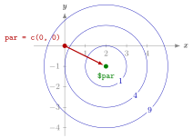

Optimization with optim()¶
Definition¶
For a function of a parameter vector ,
starts at the vector par and searches numerically for a that makes fn as small as possible. The objective fn must take the whole parameter vector as its first argument and return a single number. The result is a list with, among others:
$par: the best parameter vector found;$value: the objective value at$par;$convergence:0if the algorithm finished successfully, another code otherwise.
The default method is "Nelder-Mead", which uses only function values; method = "BFGS" (Broyden–Fletcher–Goldfarb–Shanno) also uses slopes and suits smooth functions. optim() minimizes; to maximize, minimize or set control = list(fnscale = -1). Extra arguments in ..., given by name, are passed on to fn.
Interpretation¶
optim() is the several-variable version of optimize(). Because there is no interval to search in , you give it a starting point instead, and it walks downhill from there until it can no longer improve.

The figure is Example 1. The circles are the level curves of the bowl , with values , and . Starting from par = c(0, 0) on the level , the search moves downhill and stops at the centre , which optim() reports as $par, with $value equal to up to rounding.
The same caveats as in one dimension apply, now with the starting value playing the role of the interval. For a convex bowl every starting point leads to the same minimum, but with several local minima the start decides which one is found (Example 4), so try several starting values and plot the function when you can. A convergence code of 0 means only that the algorithm stopped normally; it does not guarantee a global minimum. The first-argument rule is what lets optim() work for any number of parameters, and it lets one objective be reused with different data: the parameter vector comes first and the data follow as named arguments, as in optim(par, fn = cost_fun, demand = demand), which optim() passes on unchanged while it adjusts only par.
A common mistake is to write the objective as function(x, y) with two separate numbers. optim() then calls it with one vector and nothing for y, and stops with an error (Example 4). Pack the parameters into one vector and unpack them inside: x <- par[1]; y <- par[2].
Key Results¶
optim(par, fn)minimizesfnstarting frompar;fn(par)must return a single number.- The output fields
$par,$valueand$convergencegive the minimizer, the minimum value and the status (0for success). - Default
method = "Nelder-Mead";method = "BFGS"is suitable for smooth functions. For a single parameter useoptimize(), since Nelder–Mead in one dimension is unreliable and R warns about it. - To maximize, use
control = list(fnscale = -1)or minimize the negative; the reported$valueis then the maximum of itself. - Results are approximate (often to about four decimals) and, with several local minima, depend on the starting value.
Examples¶
1. A quadratic bowl. has its global minimum at :
f2 <- function(par) {
x <- par[1]
y <- par[2]
(x - 2)^2 + (y + 1)^2
}
res_f2 <- optim(par = c(0, 0), fn = f2, method = "BFGS")
res_f2$par
#> [1] 2 -1
res_f2$value
#> [1] 6.357135e-26
res_f2$convergence
#> [1] 0
2. The default method and an exact comparison. is zero exactly at , found by setting both squares to zero:
h <- function(par) (par[1] - 1)^2 + (2 * par[2] + 1)^2
res_h <- optim(par = c(5, 5), fn = h)
res_h$par
#> [1] 1.0003319 -0.5005387
res_h$convergence
#> [1] 0
Nelder–Mead stops close to but not exactly on it; the error in the third or fourth decimal is the price of a method that uses function values only.
3. Maximizing. The function has its maximum at :
u <- function(par) 10 - (par[1] - 1)^2 - 2 * (par[2] - 3)^2
res_u <- optim(par = c(0, 0), fn = u, method = "BFGS",
control = list(fnscale = -1))
round(res_u$par, 4)
#> [1] 1 3
round(res_u$value, 4)
#> [1] 10
With fnscale = -1 R minimizes internally but reports $value for itself.
4. Two pitfalls: separate arguments and the starting value.
f_bad <- function(x, y) (x - 2)^2 + (y + 1)^2
optim(par = c(0, 0), fn = f_bad)
#> Error in fn(par, ...) : argument "y" is missing, with no default
f4 <- function(par) par[1]^4 - 4 * par[1]^2 + par[1] + par[2]^2
round(optim(par = c(2, 1), fn = f4, method = "BFGS")$par, 3)
#> [1] -1.473 0.000
round(optim(par = c(-2, 1), fn = f4, method = "BFGS")$par, 3)
#> [1] 1.347 0.000
The first call fails because optim() passes one vector and y is missing. The function f4 has two dips, the global minimum near with value about and a local one near with value about . Surprisingly, the start ends in the left dip and the start in the right one: the slope at the start is steep, and the first step of "BFGS" jumps over the hump in the middle. The start decides which minimum is found, and not always in the obvious way.
Prerequisites¶
Related Concepts¶
- Matrix Algebra in R
- Function Arguments and Defaults
- Stationary Point
- Convexity and Concavity
- Objective Function
- Minimization-to-Maximization Transformation
Sources¶
- Programming for EOR · Week 5
- Lecture 5 script, Matrix operations, random numbers and optimisation, section "Multivariate optimisation with optim()"; Solutions Week 5, exercise 11
Aliases: optim(), optim, multivariate optimization in R, Nelder-Mead, BFGS, fnscale, starting value Keywords: parameter vector, starting value, convergence code, maximizing with fnscale Symbols: real numbers, theta
Last updated: 10 November 2026 16:43
Optimization with optim()One-Dimensional Optimization with optimize()Writing FunctionsLocal ExtremumMatrix Algebra in RFunction Arguments and DefaultsStationary PointConvexity and ConcavityObjective FunctionMinimization-to-Maximization Transformation